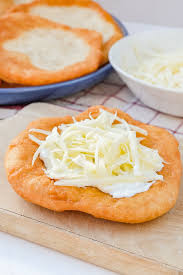
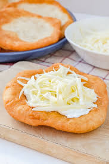

Monuments
Hungary is a land of historic landmarks, majestic castles, and charming streets. From the grandeur of Buda Castle in Budapest to the
medieval town of Eger and the scenic beauty of Hortobágy National Park, each monument tells a story of the nation’s rich heritage.
Discover the colors, traditions, and iconic sights that make Hungary an unforgettable destination.
SHOW MORE
SHOW MORE


 
